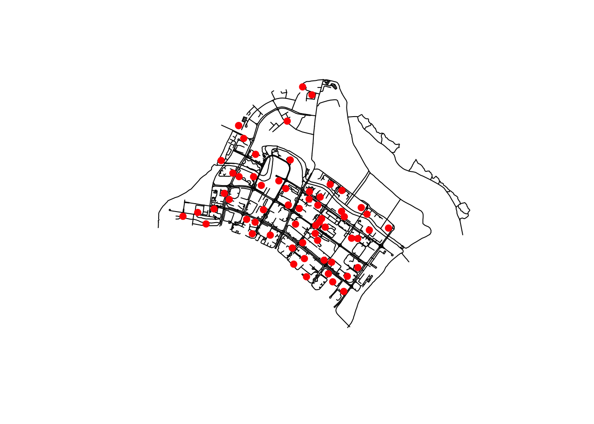
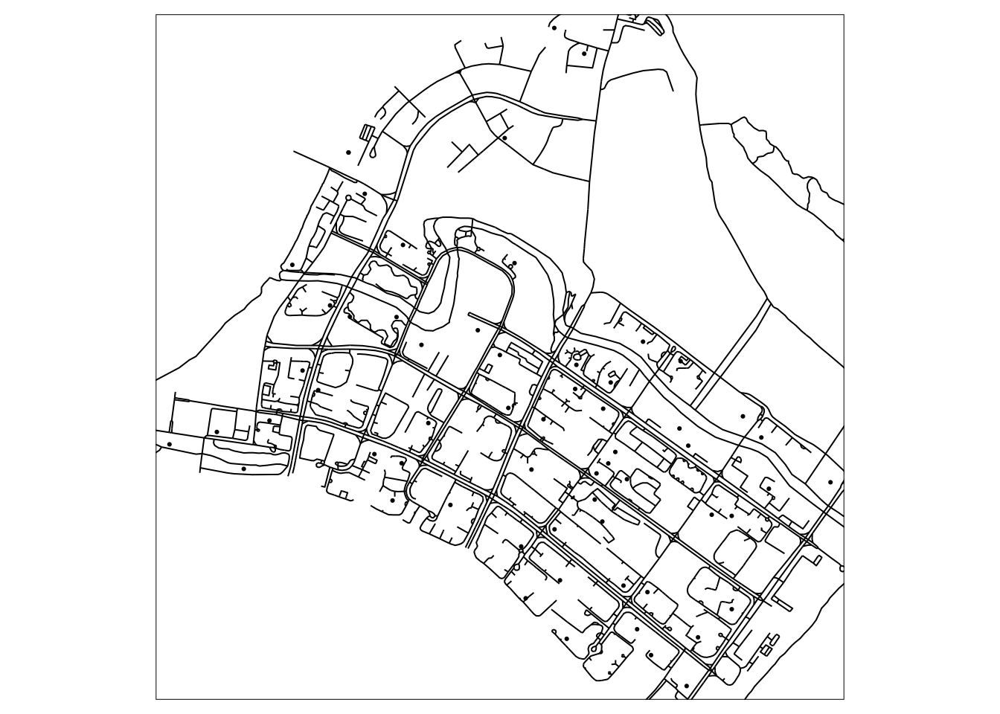
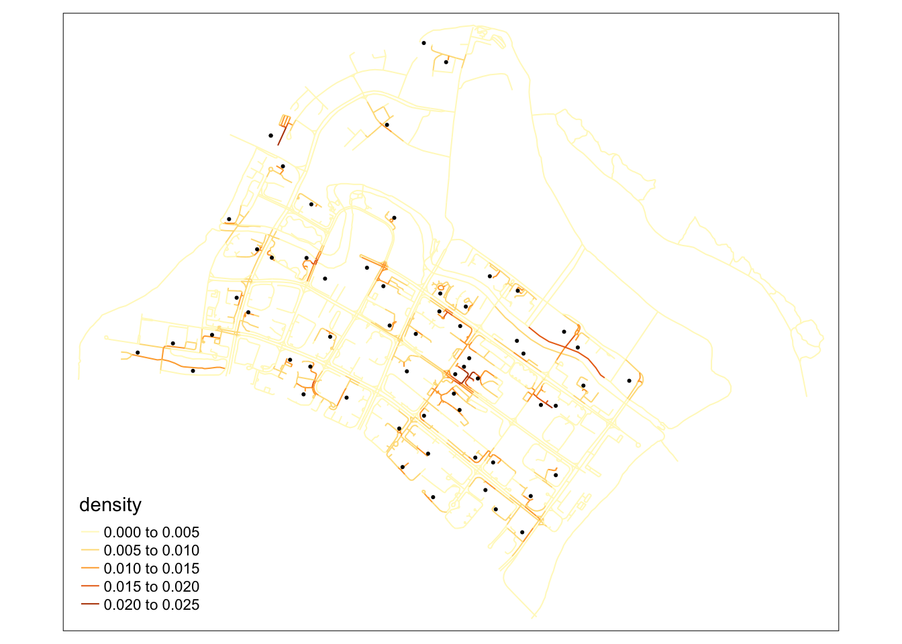
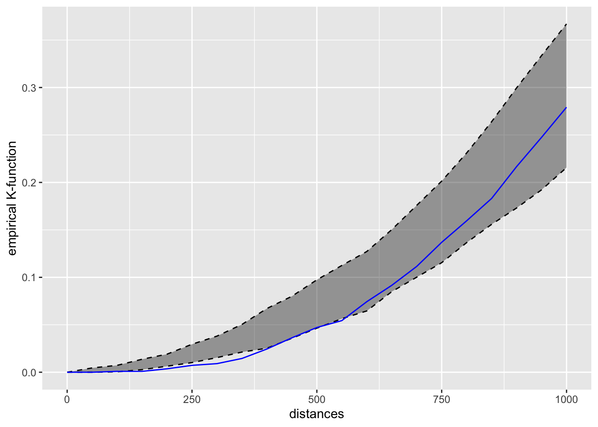

pacman::p_load(sf, spNetwork, tmap, tidyverse)Hands-on Exercise 3
7 Network Constrained Spatial Point Patterns Analysis
Install and launch the four R packages
Import data
network <- st_read(dsn="data/geospatial",
layer="Punggol_St")Reading layer `Punggol_St' from data source
`/Users/seesarhlakyi/Desktop/ssrhk/ISSS626-GAA/Hands-on_Ex/Hands-on_Ex03/data/geospatial'
using driver `ESRI Shapefile'
Simple feature collection with 2642 features and 2 fields
Geometry type: LINESTRING
Dimension: XY
Bounding box: xmin: 34038.56 ymin: 40941.11 xmax: 38882.85 ymax: 44801.27
Projected CRS: SVY21 / Singapore TMchildcare <- st_read(dsn="data/geospatial",
layer="Punggol_CC")Reading layer `Punggol_CC' from data source
`/Users/seesarhlakyi/Desktop/ssrhk/ISSS626-GAA/Hands-on_Ex/Hands-on_Ex03/data/geospatial'
using driver `ESRI Shapefile'
Simple feature collection with 61 features and 1 field
Geometry type: POINT
Dimension: XYZ
Bounding box: xmin: 34423.98 ymin: 41503.6 xmax: 37619.47 ymax: 44685.77
z_range: zmin: 0 zmax: 0
Projected CRS: SVY21 / Singapore TMVisualising the Geospatial Data
plot(st_geometry(network))
plot(childcare,add=T,col='red',pch = 19)
tmap_mode('plot')tmap mode set to plottingtm_shape(childcare) +
tm_dots() +
tm_shape(network) +
tm_lines()
Network KDE (NKDE) Analysis
Notes: Unlike traditional KDE, which assumes events can occur anywhere in a continuous space, NKDE constrains the analysis to the network structure, providing a more accurate reflection of the spatial distribution of events.
NKDE smooths the distribution of observed events along the network. This smoothing accounts for the distance between points along the network, rather than Euclidean distance, which is crucial for correctly analyzing patterns in environments where movement is restricted to specific paths.
Preparing the lixels objects
SpatialLines object need to be cut into lixels with a specified minimal distance.
lixels <- lixelize_lines(network,
700,
mindist = 375)The length of a lixel, lx_length is set to 700m, and
The minimum length of a lixel, mindist is set to 350m.
After cut, if the length of the final lixel is shorter than the minimum distance, then it is added to the previous lixel. If NULL, then mindist = maxdist/10.
Generating line centre points
Points are located at center of the line based on the length of the line
samples <- lines_center(lixels) Computing NKDE
Convert the childcare geometry to 2D:
childcare <- st_zm(childcare)densities <- nkde(network,
events = childcare,
w = rep(1, nrow(childcare)),
samples = samples,
kernel_name = "quartic",
bw = 300,
div= "bw",
method = "simple",
digits = 1,
tol = 1,
grid_shape = c(1,1),
max_depth = 8,
agg = 5,
sparse = TRUE,
verbose = FALSE)method argument indicates that simple method is used to calculate the NKDE. Currently, spNetwork support three popular methods, they are:
method=“simple”. The distances between events and sampling points are replaced by network distances, and the formula of the kernel is adapted to calculate the density over a linear unit instead of an areal unit.
method=“discontinuous”. which equally “divides” the mass density of an event at intersections of lixels.
method=“continuous”. If the discontinuous method is unbiased, it leads to a discontinuous kernel function which is a bit counter-intuitive. that divide the mass of the density at intersection but adjusts the density before the intersection to make the function continuous.
Visualising NKDE
samples$density <- densities
lixels$density <- densitiesRescaling to help mapping
samples$density <- samples$density*1000
lixels$density <- lixels$density*1000tmap_mode('plot')tmap mode set to plottingtm_shape(lixels)+
tm_lines(col="density")+
tm_shape(childcare)+
tm_dots()
Network Constrained G- and K-Function Analysis
Ho: The observed spatial point events (i.e distribution of childcare centres) are uniformly distributed over a street network in Punggol Planning Area.
The CSR test is based on the assumption of the binomial point process which implies the hypothesis that the childcare centres are randomly and independently distributed over the street network.
If this hypothesis is rejected, we may infer that the distribution of childcare centres are spatially interacting and dependent on each other; as a result, they may form nonrandom patterns.
kfun_childcare <- kfunctions(network,
childcare,
start = 0,
end = 1000,
step = 50,
width = 50,
nsim = 50,
resolution = 50,
verbose = FALSE,
conf_int = 0.05)kfun_childcare$plotk
Conclusion: Because the blue line between the distance of 250m-400m are below the gray area, we can infer that the childcare centres in Punggol planning area resemble regular pattern at the distance of 250m-400m. After 400m, the observed distribution of childcare centers along the network does not significantly deviate from the random distribution at any of the analyzed scales. In other words, there’s no strong evidence of either clustering or regular spacing of childcare centers within the analyzed distance range on the network.
Null Hypothesis: The observed spatial distribution of childcare centers is consistent with a random distribution over the street network in Punggol Planning Area.
Since the empirical K-function does not show significant deviation from the confidence envelope, we would not reject the null hypothesis. The distribution of childcare centers appears to be random along the network, without any significant clustering or regularity at the scales analyzed.